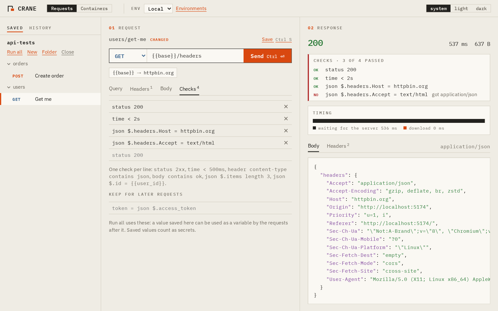
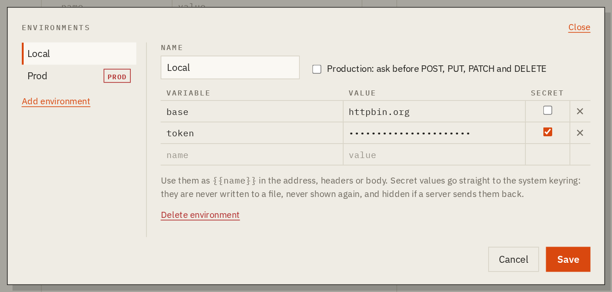
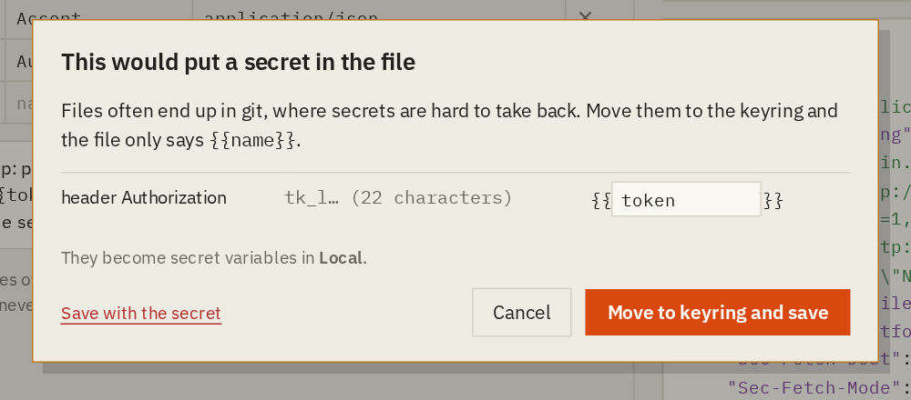
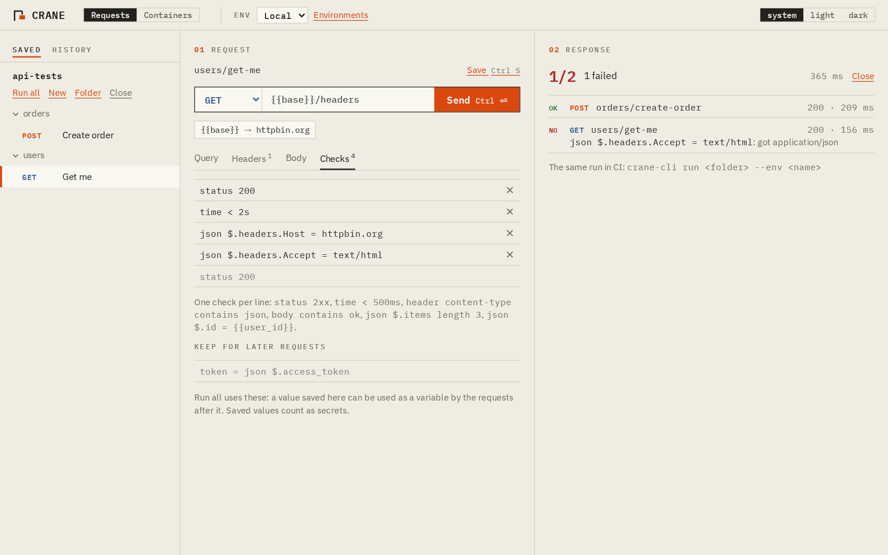
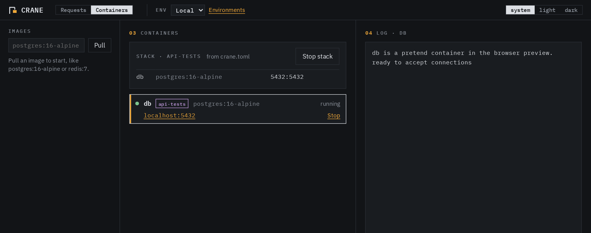

Open source · MIT · Linux, macOS, Windows
Test APIs without handing over your keys.
Crane is an API client with no account and no cloud. Secrets stay in your system keyring, requests are plain files you keep in git, and the services your API needs run in Crane's own containers.

An API client holds the keys to production. In 2023 Postman retired its offline Scratch Pad and moved everything into its cloud, and some companies stopped allowing it. In late 2024 researchers found more than 30,000 public Postman workspaces leaking API keys and tokens.
Crane is built the other way round: nothing leaves your machine except the requests you send.
Your keys stay in the keyring.
Mark a variable as secret and its value goes to the system keyring: Secret Service on Linux, Keychain on macOS, Credential Manager on Windows. The app can store it but never read it back. Rust fills it in right before sending, and if a server echoes it, the answer shows ‹token hidden›.
- Environments like Local, Test and Prod, used as
{{base}}and{{token}} - Production asks before anything changes data
- CA files, client certificates and proxies for internal APIs

Requests are files you can commit.
Open a folder and every request is a .http file, the same format VS Code REST Client and JetBrains IDEs read. Before anything is written, Crane scans it for keys and tokens, and one click moves what it finds into the keyring.
# @name Create order # @expect status 201 POST {{base}}/orders Authorization: Bearer {{token}} Content-Type: application/json {"item": "crane-001", "qty": 2}

Check the answers, here and in CI.
Write checks as lines in the file: status 2xx, time < 500ms, json $.id = {{user_id}}. Keep a value for the next request with @save. Run all sends a folder and shows what failed, and crane-cli does the same in CI, with JUnit output and secrets from environment variables.
$ crane-cli run api-tests --env CI --stack PASS POST 200 01-login.http 84 ms PASS GET 200 orders/list.http 31 ms FAIL GET 404 orders/get.http 9 ms x status 200: got 404 2 passed, 1 failed, 0.4 s

Start what your API needs. No Docker.
Crane has its own container engine. It pulls images straight from Docker Hub or GHCR, and runs them rootless, each in its own namespaces, with no internet and ports only on 127.0.0.1. A crane.toml next to your requests starts the database and the API in order and waits until each is ready.
[[service]]
name = "db"
image = "postgres:16-alpine"
env = { POSTGRES_PASSWORD = "{{db_password}}" }
ports = ["5432:5432"]
ready = { port = 5432 }

What it protects, and where it stops.
Every rule that matters is enforced in Rust, not only in the interface: secrets are write-only from the UI, file access stays inside the folder you open, and production confirmations cannot be skipped. Organisations can add a policy file that limits which hosts can be reached and turns off saving secrets, skipping certificate checks, containers or history.
Crane is young. The container engine has no seccomp filter or resource limits yet, and there has been no independent review. SECURITY.md lists every threat, what Crane does about it, and its limits.
# /etc/crane/policy.toml
contact = "it-security@example.com"
allowed_hosts = ["*.example.com", "localhost"]
allow_saving_secrets = false
allow_insecure_tls = false
containers = false
Download, or build it yourself.
Installers for Linux, macOS and Windows, and crane-cli, are on the releases page. Each comes with an SBOM and a build attestation, so you can check it was built from the source by its CI:
$ gh attestation verify crane.AppImage --repo jhtjernsmo/crane
To build from source you need Rust, Node.js and the Tauri system packages:
$ git clone https://github.com/jhtjernsmo/crane $ cd crane && npm --prefix ui install $ npx --prefix ui tauri build